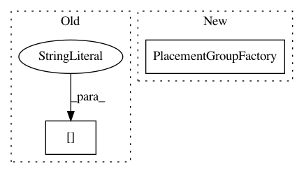

6cd0cd3bd99ec2df47bb571a18e0b70819134504,rllib/agents/impala/impala.py,OverrideDefaultResourceRequest,default_resource_request,#Any#Any#,101
Before Change
extra_cpu=cf["num_cpus_per_worker"] * cf["num_workers"] +
cf["num_aggregation_workers"],
extra_gpu=cf["num_gpus_per_worker"] * cf["num_workers"],
extra_memory=cf["memory_per_worker"] * cf["num_workers"],
extra_object_store_memory=cf["object_store_memory_per_worker"] *
cf["num_workers"])
After Change
// Return PlacementGroupFactory containing all needed resources
// (already properly defined as device bundles).
return PlacementGroupFactory(
bundles=[{
// Driver + Aggregation Workers:
// Force to be on same node to maximize data bandwidth
// between aggregation workers and the learner (driver).
// Aggregation workers tree-aggregate experiences collected
// from RolloutWorkers (n rollout workers map to m
// aggregation workers, where m < n) and always use 1 CPU
// each.
"CPU": cf["num_cpus_for_driver"] +
cf["num_aggregation_workers"],
"GPU": cf["num_gpus"]
}] + [
{
// RolloutWorkers.
"CPU": cf["num_cpus_per_worker"],
"GPU": cf["num_gpus_per_worker"],
} for _ in range(cf["num_workers"])
] + ([
{
// Evaluation workers (+1 b/c of the additional local
// worker)
"CPU": eval_config.get("num_cpus_per_worker",
cf["num_cpus_per_worker"]),
"GPU": eval_config.get("num_gpus_per_worker",
cf["num_gpus_per_worker"]),
} for _ in range(cf["evaluation_num_workers"] + 1)
] if cf["evaluation_interval"] else []),
strategy=config.get("placement_strategy", "PACK"))
def make_learner_thread(local_worker, config):
if config["num_gpus"] > 1 or config["num_data_loader_buffers"] > 1:
In pattern: SUPERPATTERN
Frequency: 3
Non-data size: 2
Instances
Project Name: ray-project/ray
Commit Name: 6cd0cd3bd99ec2df47bb571a18e0b70819134504
Time: 2021-02-25
Author: sven@anyscale.io
File Name: rllib/agents/impala/impala.py
Class Name: OverrideDefaultResourceRequest
Method Name: default_resource_request
Project Name: ray-project/ray
Commit Name: dc42abb2f5f7dd059cf6fac3eae2832931925573
Time: 2021-01-18
Author: krfricke@users.noreply.github.com
File Name: python/ray/tune/config_parser.py
Class Name:
Method Name: create_trial_from_spec
Project Name: ray-project/ray
Commit Name: ef944bc5f0d7764cd99d50500e470eac005a3d01
Time: 2021-03-04
Author: sven@anyscale.io
File Name: rllib/agents/impala/impala.py
Class Name: OverrideDefaultResourceRequest
Method Name: default_resource_request